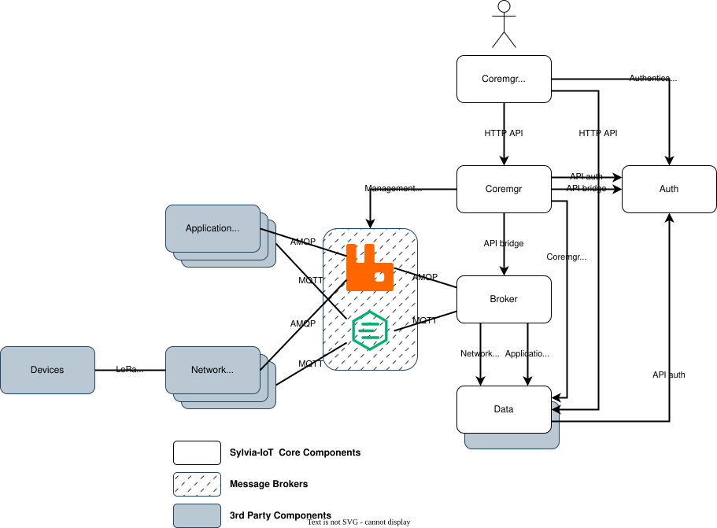
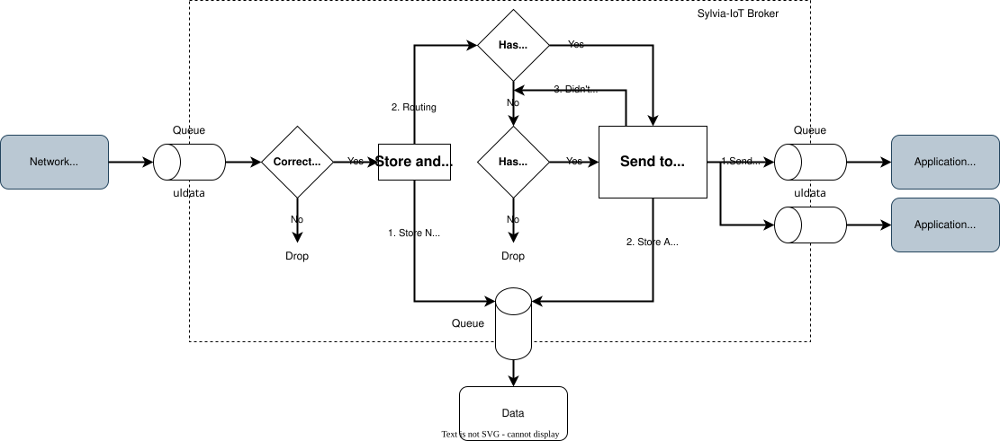
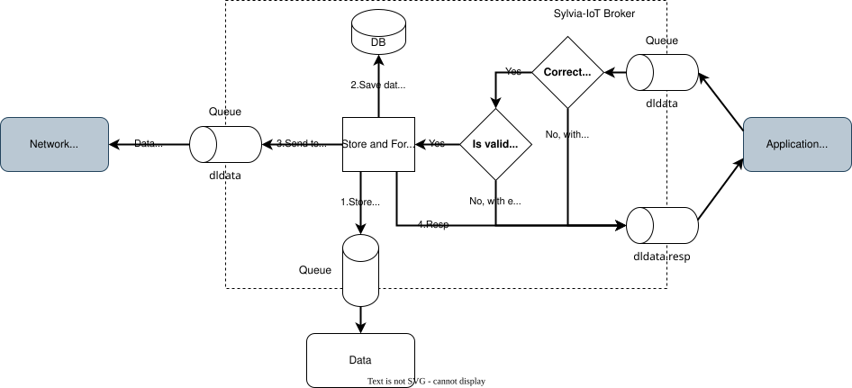
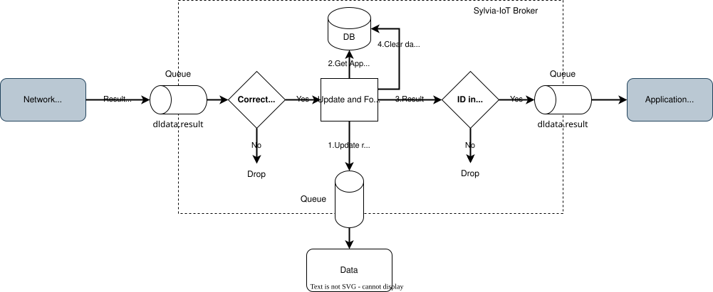
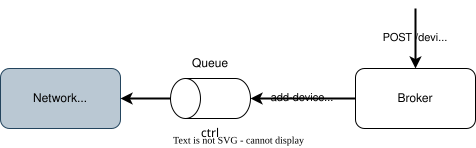
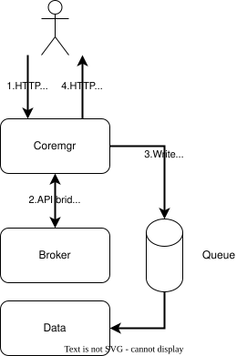
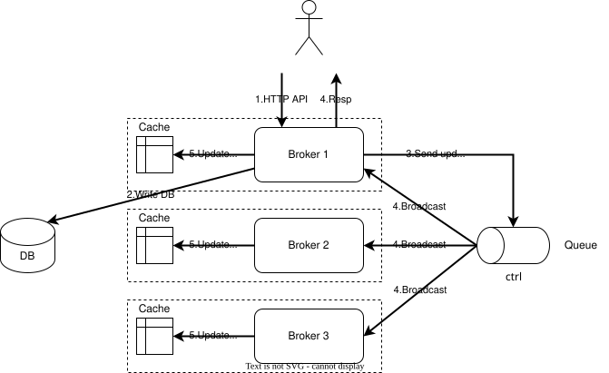

介紹
這份文件會帶您逐步認識什麼是 Sylvia-IoT 物聯網平台，接著提供如何安裝與使用的說明。
在初步了解 Sylvia-IoT 和使用方式後，會進一步介紹內部架構，讓您知道 Sylvia-IoT 的模組和運作原理，以及它在提升效能上的設計思維。
開發指南，會先說明第三方的開發者或廠商該如何開發他們的應用或是網路服務。 如果對 Sylvia-IoT 的核心開發有興趣的人，指南也提供了程式碼的架構以及風格。
讓我們開始吧！
什麼是 Sylvia-IoT？
Sylvia-IoT 是一個物聯網平台，最主要的功能就是將裝置的訊息轉發給應用程式，或是應用程式發送命令給裝置。
上圖是一個簡單的說明。裝置（如感應器）會綁定某一種傳輸模組，透過網路閘道器或網路伺服器傳輸資料。 Sylvia-IoT 就是一個提供訊息轉發的角色，每個應用程式可以訂閱他們關注的裝置來分析資料，或是傳輸資料到裝置。
特點
使用 Sylvia-IoT 平台，對於各個供應商可以提供以下好處：
- 裝置供應商（Device Provider）
- 可以更容易變更網路供應商的模組，無須變更應用程式即可無縫接軌。
- 網路供應商（Network Provider）
- 專注開發網路傳輸協定供裝置使用。
- 可以開發連接器（adapter）連接 Sylvia-IoT 平台。
- 應用供應商（Application Provider）
- 可以隨時指定任意數量的應用接收來自同一個裝置的資料。
- 透過 Sylvia-IoT 的通訊協定隔離，可以任意更換裝置的網路供應商而無須改寫程式碼。
概念
Sylvia-IoT 提供了 HTTP API 管理以下實體：
- 使用者帳號（User Account）
- 透過使用者帳號可以存取 Sylvia-IoT 的管理介面。
- 可以透過客戶端取得訪問令牌（access token）存取 HTTP API。
- 客戶端應用程式（Client）
- 存取 HTTP API 的實體。
- 第三方可以透過 HTTP API 開發 Sylvia-IoT 的管理功能。
- 透過 OAuth2 讓使用者授權客戶端存取資源。
- 單位（Unit）
- 每個單位可以指派一個擁有者和多個成員。
- 每個單位可以管理自己的裝置、網路、應用。
- 裝置（Device）
- 如感應器、追蹤器等物聯網的終端裝置。
- 應用（Application）
- 依據需求，分析裝置的資料並呈現，比如智慧家電控制中心。
- 網路（Network）
- 依裝置的通訊需求，連接不同的網路伺服器來收送裝置資料。
- 常見的通訊協定有 LoRa、WiFi 等。也可以直接使用 TCP/IP。
- 可以開發網路連接器（network adapter），將既有的網路伺服器（network server，如 TTN、ChirpStack）和 Sylvia-IoT 整合。
- 路由規則（Routing Rules）
- 裝置和應用的關聯。
- 可以將個別裝置透過網路位址（network address）綁定、或是將整個網路綁定到特定應用。
- 多對多的關係。也就是多個裝置可以綁定一個應用，也可以一個裝置綁定多個應用。
傳輸協定
目前 Sylvia-IoT 支援以下協定，和應用與網路進行訊息傳輸：
- AMQP 0-9-1
- MQTT 3.1.1
只要能符合明確名稱（不含萬用字元）的消息佇列模式（message queuing model）都可以支援。比如 AMQP 1.0、Apache Kafka、NATS 等。 目前還不支援主題式發布訂閱（topic publish/subscribe）或廣播（broadcast）、多播（multicast）的模式。
使用指南
本章內容：
- 帶您快速運行一個可用的 Sylvia-IoT 並實際模擬接收裝置資料。
- 提供完整的設定檔內容與概述。
快速開始
本章節描述在 Ubuntu 22.04 環境的快速安裝步驟。
安裝工具
sudo apt -y install curl jq
安裝 Docker
這裡參考 Docker 官方網站 的安裝步驟。
sudo apt -y install apt-transport-https ca-certificates curl gnupg lsb-release
curl -fsSL https://download.docker.com/linux/ubuntu/gpg | sudo gpg --dearmor -o /usr/share/keyrings/docker-archive-keyring.gpg
echo "deb [arch=amd64 signed-by=/usr/share/keyrings/docker-archive-keyring.gpg] https://download.docker.com/linux/ubuntu $(lsb_release -cs) stable" | sudo tee /etc/apt/sources.list.d/docker.list > /dev/null
sudo apt update
sudo apt -y install docker-ce docker-ce-cli containerd.io docker-compose-plugin
sudo usermod -aG docker $USER
記得重啟 shell 套用使用者權限。
安裝 MongoDB、RabbitMQ、EMQX
啟動服務（版本和資料保存的資料夾可以視情形調整）：
export MONGODB_VER=8.2.2
export RABBITMQ_VER=4.2.0
export EMQX_VER=6.0.1
export MONGODB_DIR=$HOME/db/mongodb
export RABBITMQ_DIR=$HOME/db/rabbitmq
export EMQX_DIR=$HOME/db/emqx
mkdir -p $MONGODB_DIR
docker run --rm --name mongodb -d \
-p 27017:27017 \
-v $MONGODB_DIR:/data/db \
mongo:$MONGODB_VER
mkdir -p $RABBITMQ_DIR
docker run --rm --name rabbitmq -d \
-e RABBITMQ_NODENAME="rabbit@localhost" \
-p 5671:5671 -p 5672:5672 -p 15672:15672 \
-v $RABBITMQ_DIR:/var/lib/rabbitmq \
rabbitmq:$RABBITMQ_VER-management-alpine
mkdir -p $EMQX_DIR
docker run --rm --name emqx -d \
-e EMQX_LOADED_PLUGINS="emqx_dashboard|emqx_management|emqx_auth_mnesia" \
-e EMQX_LOADED_MODULES="emqx_mod_acl_internal,emqx_mod_presence,emqx_mod_topic_metrics" \
-p 1883:1883 -p 8883:8883 -p 18083:18083 \
-v $EMQX_DIR:/opt/emqx/data \
emqx/emqx:$EMQX_VER
這裡只是介紹 EMQX 需要使用的 plugin，下面的展示不會使用。您也可以先不啟動 EMQX。
下載 Sylvia-IoT
ARCH=x86_64 # x86_64 or arm64
curl -LO https://github.com/woofdogtw/sylvia-iot-core/releases/latest/download/sylvia-iot-core-$ARCH.tar.xz
curl -LO https://github.com/woofdogtw/sylvia-iot-core/releases/latest/download/sylvia-iot-coremgr-cli-$ARCH.tar.xz
curl -L -o config.json5 https://github.com/woofdogtw/sylvia-iot-core/raw/main/files/config.json5.example
tar xf sylvia-iot-core-$ARCH.tar.xz
tar xf sylvia-iot-coremgr-cli-$ARCH.tar.xz
修改 config.json5
為了方便展示，這裡對範例的 config.json5 做了一些修改：
- 由於這裡要展示的是 MongoDB，將所有的
"engine": "sqlite"改成"engine": "mongodb"。"db": { "engine": "mongodb", ... }, - 先不啟用 HTTPS，將憑證檔設定註解掉：
//"cacertFile": "/etc/ssl/certs/ca-certificates.crt", //"certFile": "/home/user/rust/conf/certs/sylvia-iot.crt", //"keyFile": "/home/user/rust/conf/certs/sylvia-iot.key", - 建立一個資料夾作為靜態檔案的存放處，此處的例子是
/home/user/static。"staticPath": "/home/user/static", - 使用預設的登入頁面樣板，將範例的註解掉：
"templates": { // Jinja2 template paths. //"login": "/home/user/rust/static/login.j2", //"grant": "/home/user/rust/static/grant.j2", }, - 使用 rumqttd 而非 EMQX：
"coremgr": { ... "mq": { "engine": { "amqp": "rabbitmq", "mqtt": "rumqttd", }, ... }, ... },
設定初始資料
先進入 MongoDB shell：
docker exec -it mongodb mongosh
在 MongoDB shell 介面建立基本資料：
use test1
db.user.insertOne({
userId: 'admin',
account: 'admin',
createdAt: new Date(),
modifiedAt: new Date(),
verifiedAt: new Date(),
expiredAt: null,
disabledAt: null,
roles: {"admin":true,"dev":false},
password: '27258772d876ffcef7ca2c75d6f4e6bcd81c203bd3e93c0791c736e5a2df4afa',
salt: 'YsBsou2O',
name: 'Admin',
info: {}
})
db.client.insertOne({
clientId: 'public',
createdAt: new Date(),
modifiedAt: new Date(),
clientSecret: null,
redirectUris: ['http://localhost:1080/auth/oauth2/redirect'],
scopes: [],
userId: 'dev',
name: 'Public',
imageUrl: null
})
接著按兩次 Ctrl+C 離開。
開始使用
啟動 Sylvia-IoT core：
./sylvia-iot-core -f config.json5
如果程式沒有結束，表示已經啟動成功了 😊。
另外開一個命令列視窗，使用 CLI 登入：
./sylvia-iot-coremgr-cli -f config.json5 login -a admin -p admin
將會看到如下的畫面（您看到的內容會有些不同）：
$ ./sylvia-iot-coremgr-cli -f config.json5 login -a admin -p admin
{
"access_token": "ef9cf7cfc645f9092b9af62666d903c5a8e4579ff6941b479c1d9c9b63b0b634",
"refresh_token": "265983a08af706fbe2912ff2edb1750311d1b689e4dab3a83c4b494c4cf2d033",
"token_type": "bearer",
"expires_in": 3599
}
OK (146 ms)
Access token 會自動被保留在 $HOME/.sylvia-iot-coremgr-cli.json 這個檔案中，CLI 會依據裡面的內容來存取 API。
可以使用 ./sylvia-iot-coremgr-cli help 查詢指令的使用方式。
建立資源
為了方便使用 mosquitto CLI，這裡我們分別以下的實體：
- 一個單位，單位代碼是 demo
- 一個 MQTT 應用，應用代碼是 test-app-mqtt
- 一個 MQTT 網路，網路代碼是 test-net-mqtt
- 一個裝置，裝置網路位址為 01000461
- 一個路由，將該裝置綁定給應用
過程會需要變更連線密碼為 password（您看到的內容會有些不同）：
UNIT_ID=$(./sylvia-iot-coremgr-cli -f config.json5 unit add -c demo -o admin -n 'Demo' | jq -r .unitId)
APP_ID=$(./sylvia-iot-coremgr-cli -f config.json5 application add -c test-app-mqtt -u $UNIT_ID --host 'mqtt://localhost' -n 'TestApp-MQTT' | jq -r .applicationId)
NET_ID=$(./sylvia-iot-coremgr-cli -f config.json5 network add -c test-net-mqtt -u $UNIT_ID --host 'mqtt://localhost' -n 'TestNet-MQTT' | jq -r .networkId)
./sylvia-iot-coremgr-cli -f config.json5 application update -i $APP_ID -p password
./sylvia-iot-coremgr-cli -f config.json5 network update -i $NET_ID -p password
DEV_ID=$(./sylvia-iot-coremgr-cli -f config.json5 device add -u $UNIT_ID --netid $NET_ID -a 01000461 -n 01000461 | jq -r .deviceId)
./sylvia-iot-coremgr-cli -f config.json5 device-route add -d $DEV_ID -a $APP_ID
上傳裝置資料
可以用以下指令安裝 mosquitto CLI：
sudo apt -y install mosquitto-clients
開啟一個 shell 訂閱應用主題（格式為 broker.application.[單位代碼].[應用代碼].uldata）：
mosquitto_sub -u test-app-mqtt -P password -t broker.application.demo.test-app-mqtt.uldata
開啟另一個 shell 模擬網路系統傳送裝置資料（主題格式為 broker.network.[單位代碼].[網路代碼].uldata）：
mosquitto_pub -u test-net-mqtt -P password -t broker.network.demo.test-net-mqtt.uldata -m '{"time":"2023-07-08T06:55:02.000Z","networkAddr":"01000461","data":"74657374"}'
這時您應該會在訂閱的 shell 看到如下畫面（內容可能有些不同）：
$ mosquitto_sub -u test-app-mqtt -P password -t broker.application.demo.test-app-mqtt.uldata
{"dataId":"1688799672075-iJ4YQeQ5Lyv4","time":"2023-07-08T06:55:02.000Z","pub":"2023-07-08T07:01:12.075Z","deviceId":"1688798563252-aWcZVRML","networkId":"1688798370824-RwAbBDFh","networkCode":"test-net-mqtt","networkAddr":"01000461","isPublic":true,"profile":"","data":"74657374"}
如果有看到資料，恭喜您完成基本的 Sylvia-IoT 的使用了（恭喜你解鎖成就 😆）！
設定檔
本章節描述 Sylvia-IoT 的設定格式和用途。
Sylvia-IoT 的設定支援四種來源，優先權依序為（高到低）：
- JSON5 設定檔
- 命令列參數
- 環境變數
- 內部預設值（不一定存在，如為必填且不提供則會有錯誤訊息）
JSON5 可以參考範例檔案，該檔案提供了完整的設定項目。 本章節將會提供對應的說明。以下為設定的慣例：
- JSON5 的巢狀形式會以
.來表示。 - 命令列參數遇到 JSON5 的巢狀會以
.來表示。 - 命令列參數遇到 JSON5 為駝峰的情形，會以全小寫或是
-尾隨小寫來表示。以下為例子：- JSON5 的
server.httpPort對應--server.httpport。 - JSON5 的
broker.mqChannels對應--broker.mq-channels。
- JSON5 的
- 環境變數全大寫。
- 環境變數遇到 JSON5 的巢狀會以
_來表示。 - 環境變數遇到 JSON5 為駝峰的情形，會以全大寫或是
_分開來表示。以下為例子：- JSON5 的
server.httpPort對應SERVER_HTTP_PORT - JSON5 的
broker.mqChannels對應BROKER_MQCHANNELS
- JSON5 的
接下來是完整的表格說明。
如有標示 參照範例 表示範例的 JSON5 有提供，或是可以使用 CLI help 指令查看支援的選項。
共同設定
| JSON5 | 命令列參數 | 環境變數 | 預設值 | 說明 |
|---|---|---|---|---|
| log.level | log.level | LOG_LEVEL | info | Log 等級。參照範例 |
| log.style | log.style | LOG_STYLE | json | Log 樣式。參照範例 |
| server.httpPort | log.httpport | SERVER_HTTP_PORT | 1080 | HTTP 監聽連接埠 |
| server.httpsPort | log.httpsport | SERVER_HTTPS_PORT | 1443 | HTTPS 監聽連接埠 |
| server.cacertFile | log.cacertfile | SERVER_CACERT_FILE | HTTPS 根憑證擋位置 | |
| server.certFile | log.certfile | SERVER_CERT_FILE | HTTPS 憑證擋位置 | |
| server.keyFile | log.keyfile | SERVER_KEY_FILE | HTTPS 私鑰位置 | |
| server.staticPath | log.static | SERVER_STATIC_PATH | 靜態檔案目錄位置 |
詳細說明
- 目前還未使用根憑證。
- 必須同時使用憑證和私鑰才能啟用 HTTPS 服務。
API Scopes
所有的 API 都需要透過在系統註冊的客戶端（client）以及訪問令牌（access token）才能存取。每一個令牌會記錄所屬的客戶端，只有經過授權的客戶端才能存取 API。
當某個 API 對應的 apiScopes 的設定被開啟時，除非客戶端在註冊的時候有啟用這些 scope 並被使用者授權，取得的令牌才能存取該 API。
命令列參數和環境變數都要是 JSON string，舉例：
--auth.api-scopes='{"auth.tokeninfo.get":[]}'
您可以自行定義 scope 名稱，並套用到各個 API scope 中。可以參考下面認證服務的範例。
認證服務（auth）
| JSON5 | 命令列參數 | 環境變數 | 預設值 | 說明 |
|---|---|---|---|---|
| auth.db.engine | auth.db.engine | AUTH_DB_ENGINE | sqlite | 使用的資料庫種類 |
| auth.db.mongodb.url | auth.db.mongodb.url | AUTH_DB_MONGODB_URL | mongodb://localhost:27017 | MongoDB 連線的 URL |
| auth.db.mongodb.database | auth.db.mongodb.database | AUTH_DB_MONGODB_DATABASE | auth | MongoDB 資料庫名稱 |
| auth.db.mongodb.poolSize | auth.db.mongodb.poolsize | AUTH_DB_MONGODB_POOLSIZE | MongoDB 最大連線數量 | |
| auth.db.sqlite.path | auth.db.sqlite.path | AUTH_DB_SQLITE_PATH | auth.db | SQLite 檔案位置 |
| auth.db.templates.login | auth.db.templates | AUTH_TEMPLATES | 登入頁面樣板位址 | |
| auth.db.templates.grant | auth.db.templates | AUTH_TEMPLATES | 授權頁面樣板位址 | |
| auth.db.apiScopes | auth.api-scopes | AUTH_API_SCOPES | API 權限設定 |
詳細說明
- templates（樣板）
- API scopes
- auth 模組提供了以下幾個 scope 可供設定給對應的 API，限制 client 可以存取的範圍：
auth.tokeninfo.get: 授權 client 讀取令牌的資料。GET /api/v1/auth/tokeninfo
auth.logout.post: 授權 client 將令牌登出。POST /auth/api/v1/auth/logout
user.get: 授權 client 存取目前使用者的個人資料。GET /api/v1/user
user.path: 授權 client 修改目前使用者的個人資料。PATCH /api/v1/user
user.get.admin: 授權 client 取得系統所有使用者的資料。GET /api/v1/user/countGET /api/v1/user/listGET /api/v1/user/{userId}
user.post.admin: 授權 client 在系統建立新的使用者。POST /api/v1/user
user.patch.admin: 授權 client 修改系統任意使用者的資料。PATCH /api/v1/user/{userId}
user.delete.admin: 授權 client 刪除系統任意使用者的資料。DELETE /api/v1/user/{userId}
client.get: 授權 client 存取得系統所有客戶端資料。GET /api/v1/client/countGET /api/v1/client/listGET /api/v1/client/{clientId}
client.post: 授權 client 在系統建立新的客戶端。POST /api/v1/client
client.patch: 授權 client 修改系統任意客戶端的資料。PATCH /api/v1/client/{clientId}
client.delete: 授權 client 刪除系統任意客戶端的資料。DELETE /api/v1/client/{clientId}
client.delete.user: 授權 client 刪除系統任意使用者的所有客戶端。DELETE /api/v1/client/user/{userId}
- 舉例，在您的服務定義如下的 scope：
api.admin: 僅能授權移除使用者的所有客戶端。api.rw: 可以讀寫除了DELETE /api/v1/client/user/{userId}的所有 API。api.readonly： 只能存取 GET API。- 取得令牌資料和登出，這兩個動作開放所有客戶端可以使用。
"auth": { ... "apiScopes": { "auth.tokeninfo.get": [], "auth.logout.post": [], "user.get": ["api.rw", "api.readonly"], "user.patch": ["api.rw"], "user.post.admin": ["api.rw"], "user.get.admin": ["api.rw", "api.readonly"], "user.patch.admin": ["api.rw"], "user.delete.admin": ["api.rw"], "client.post": ["api.rw"], "client.get": ["api.rw", "api.readonly"], "client.patch": ["api.rw"], "client.delete": ["api.rw"], "client.delete.user": ["api.admin"], }, ... }- 以這個例子，註冊的客戶端可以任意勾選這三種 scope。之後使用者會在授權頁面得知這些訊息，並且決定是否授權客戶端。
- auth 模組提供了以下幾個 scope 可供設定給對應的 API，限制 client 可以存取的範圍：
消息代理服務（broker）
| JSON5 | 命令列參數 | 環境變數 | 預設值 | 說明 |
|---|---|---|---|---|
| broker.auth | broker.auth | BROKER_AUTH | http://localhost:1080/auth | 認證服務位址 |
| broker.db.engine | broker.db.engine | BROKER_DB_ENGINE | sqlite | 使用的資料庫種類 |
| broker.db.mongodb.url | broker.db.mongodb.url | BROKER_DB_MONGODB_URL | mongodb://localhost:27017 | MongoDB 連線的 URL |
| broker.db.mongodb.database | broker.db.mongodb.database | BROKER_DB_MONGODB_DATABASE | auth | MongoDB 資料庫名稱 |
| broker.db.mongodb.poolSize | broker.db.mongodb.poolsize | BROKER_DB_MONGODB_POOLSIZE | MongoDB 最大連線數量 | |
| broker.db.sqlite.path | broker.db.sqlite.path | BROKER_DB_SQLITE_PATH | auth.db | SQLite 檔案位置 |
| broker.cache.engine | broker.cache.engine | BROKER_CACHE_ENGINE | none | 使用的快取種類 |
| broker.cache.memory.device | broker.cache.memory.device | BROKER_CACHE_MEMORY_DEVICE | 1,000,000 | Memory 對裝置的快取數量 |
| broker.cache.memory.deviceRoute | broker.cache.memory.device-route | BROKER_CACHE_MEMORY_DEVICE_ROUTE | 1,000,000 | Memory 對裝置路由的快取數量 |
| broker.cache.memory.networkRoute | broker.cache.memory.network-route | BROKER_CACHE_MEMORY_NETWORK_ROUTE | 1,000,000 | Memory 對網路路由的快取數量 |
| broker.mq.prefetch | broker.mq.prefetch | BROKER_MQ_PREFETCH | 100 | AMQP 消費者最大同時消費的數量 |
| broker.mq.persistent | broker.mq.persistent | BROKER_MQ_PERSISTENT | false | AMQP 產生者使用持久性傳送 |
| broker.mq.sharedPrefix | broker.mq.sharedprefix | BROKER_MQ_SHAREDPREFIX | $share/sylvia-iot-broker/ | MQTT shared subscription 的前綴 |
| broker.mqChannels.unit.url | broker.mq-channels.unit.url | BROKER_MQCHANNELS_UNIT_URL | amqp://localhost | 單位的控制訊息位址 |
| broker.mqChannels.unit.prefetch | broker.mq-channels.unit.prefetch | BROKER_MQCHANNELS_UNIT_PREFETCH | 100 | 單位的控制訊息 AMQP 消費者最大同時消費的數量 |
| broker.mqChannels.application.url | broker.mq-channels.application.url | BROKER_MQCHANNELS_APPLICATION_URL | amqp://localhost | 應用的控制訊息位址 |
| broker.mqChannels.application.prefetch | broker.mq-channels.application.prefetch | BROKER_MQCHANNELS_APPLICATION_PREFETCH | 100 | 應用的控制訊息 AMQP 消費者最大同時消費的數量 |
| broker.mqChannels.network.url | broker.mq-channels.network.url | BROKER_MQCHANNELS_NETWORK_URL | amqp://localhost | 單位的控制訊息位址 |
| broker.mqChannels.network.prefetch | broker.mq-channels.network.prefetch | BROKER_MQCHANNELS_NETWORK_PREFETCH | 100 | 單位的控制訊息 AMQP 消費者最大同時消費的數量 |
| broker.mqChannels.device.url | broker.mq-channels.device.url | BROKER_MQCHANNELS_DEVICE_URL | amqp://localhost | 裝置的控制訊息位址 |
| broker.mqChannels.device.prefetch | broker.mq-channels.device.prefetch | BROKER_MQCHANNELS_DEVICE_PREFETCH | 100 | 裝置的控制訊息 AMQP 消費者最大同時消費的數量 |
| broker.mqChannels.deviceRoute.url | broker.mq-channels.device-route.url | BROKER_MQCHANNELS_DEVICE_ROUTE_URL | amqp://localhost | 裝置路由的控制訊息位址 |
| broker.mqChannels.deviceRoute.prefetch | broker.mq-channels.device-route.prefetch | BROKER_MQCHANNELS_DEVICE_ROUTE_PREFETCH | 100 | 裝置路由的控制訊息 AMQP 消費者最大同時消費的數量 |
| broker.mqChannels.networkRoute.url | broker.mq-channels.network-route.url | BROKER_MQCHANNELS_NETWORK_ROUTE_URL | amqp://localhost | 網路路由的控制訊息位址 |
| broker.mqChannels.networkRoute.prefetch | broker.mq-channels.network-route.prefetch | BROKER_MQCHANNELS_NETWORK_ROUTE_PREFETCH | 100 | 網路路由的控制訊息 AMQP 消費者最大同時消費的數量 |
| broker.mqChannels.data.url | broker.mq-channels.data.url | BROKER_MQCHANNELS_DATA_URL | 資料訊息位址 | |
| broker.mqChannels.data.persistent | broker.mq-channels.data.persistent | BROKER_MQCHANNELS_DATA_PERSISTENT | false | 資料訊息使用持久性傳送 |
| broker.db.apiScopes | broker.api-scopes | BROKER_API_SCOPES | API 權限設定 |
詳細說明
-
指定認證服務位址（
broker.auth）的用意在檢查呼叫 API 的令牌的合法性，包含使用者帳號與客戶端。 -
MQ channels:
-
API scopes: 請參考認證服務的說明。
核心管理服務（coremgr）
| JSON5 | 命令列參數 | 環境變數 | 預設值 | 說明 |
|---|---|---|---|---|
| coremgr.auth | coremgr.auth | COREMGR_AUTH | http://localhost:1080/auth | 認證服務位址 |
| coremgr.broker | coremgr.broker | COREMGR_BROKER | http://localhost:2080/broker | 訊息代理服務位址 |
| coremgr.mq.engine.amqp | coremgr.mq.engine.amqp | COREMGR_MQ_ENGINE_AMQP | rabbitmq | AMQP 種類 |
| coremgr.mq.engine.mqtt | coremgr.mq.engine.mqtt | COREMGR_MQ_ENGINE_MQTT | emqx | MQTT 種類 |
| coremgr.mq.rabbitmq.username | coremgr.mq.rabbitmq.username | COREMGR_MQ_RABBITMQ_USERNAME | guest | RabbitMQ 管理者帳號 |
| coremgr.mq.rabbitmq.password | coremgr.mq.rabbitmq.password | COREMGR_MQ_RABBITMQ_PASSWORD | guest | RabbitMQ 管理者密碼 |
| coremgr.mq.rabbitmq.ttl | coremgr.mq.rabbitmq.ttl | COREMGR_MQ_RABBITMQ_TTL | RabbitMQ 預設佇列訊息存活長度（秒） | |
| coremgr.mq.rabbitmq.length | coremgr.mq.rabbitmq.length | COREMGR_MQ_RABBITMQ_LENGTH | RabbitMQ 預設佇列訊息最多個數 | |
| coremgr.mq.rabbitmq.hosts | coremgr.mq.rabbitmq.hosts | COREMGR_MQ_RABBITMQ_HOSTS | （保留） | |
| coremgr.mq.emqx.apiKey | coremgr.mq.emqx.apikey | COREMGR_MQ_EMQX_APIKEY | EMQX 管理 API key | |
| coremgr.mq.emqx.apiSecret | coremgr.mq.emqx.apisecret | COREMGR_MQ_EMQX_APISECRET | EMQX 管理 API secret | |
| coremgr.mq.emqx.hosts | coremgr.mq.emqx.hosts | COREMGR_MQ_EMQX_HOSTS | （保留） | |
| coremgr.mq.rumqttd.mqttPort | coremgr.mq.rumqttd.mqtt-port | COREMGR_MQ_RUMQTTD_MQTT_PORT | 1883 | rumqttd MQTT 連接埠 |
| coremgr.mq.rumqttd.mqttsPort | coremgr.mq.rumqttd.mqtts-port | COREMGR_MQ_RUMQTTD_MQTTS_PORT | 8883 | rumqttd MQTTS 連接埠 |
| coremgr.mq.rumqttd.consolePort | coremgr.mq.rumqttd.console-port | COREMGR_MQ_RUMQTTD_CONSOLE_PORT | 18083 | rumqttd 管理 API 連接埠 |
| coremgr.mqChannels.data.url | coremgr.mq-channels.data.url | COREMGR_MQCHANNELS_DATA_URL | 資料訊息位址 | |
| coremgr.mqChannels.data.persistent | coremgr.mq-channels.data.persistent | COREMGR_MQCHANNELS_DATA_PERSISTENT | false | 資料訊息使用持久性傳送 |
詳細說明
- MQ channels:
- data 是 資料訊息（data channel message）
- 目前 coremgr 支援紀錄 GET API 以外的 HTTP 請求內容，開啟資料通道即可紀錄 API 使用歷程。
- 不指定參數（或是 JSON5 設定 null）就會不儲存任何資料。
- data 是 資料訊息（data channel message）
核心管理服務管理介面（coremgr-cli）
| JSON5 | 命令列參數 | 環境變數 | 預設值 | 說明 |
|---|---|---|---|---|
| coremgrCli.auth | coremgr-cli.auth | COREMGRCLI_AUTH | http://localhost:1080/auth | 認證服務位址 |
| coremgrCli.coremgr | coremgr-cli.coremgr | COREMGRCLI_COREMGR | http://localhost:3080/coremgr | 核心管理服務位址 |
| coremgrCli.data | coremgr-cli.data | COREMGRCLI_DATA | http://localhost:4080/data | 資料服務位址 |
| coremgrCli.clientId | coremgr-cli.client-id | COREMGRCLI_CLIENT_ID | 命令列客戶端 ID | |
| coremgrCli.redirectUri | coremgr-cli.redirect-uri | COREMGRCLI_REDIRECT_URI | 命令列客戶端重轉向網址 |
資料服務（data）
| JSON5 | 命令列參數 | 環境變數 | 預設值 | 說明 |
|---|---|---|---|---|
| data.auth | data.auth | DATA_AUTH | http://localhost:1080/auth | 認證服務位址 |
| data.broker | data.broker | DATA_BROKER | http://localhost:2080/broker | 訊息代理服務位址 |
| data.db.engine | data.db.engine | DATA_DB_ENGINE | sqlite | 使用的資料庫種類 |
| data.db.mongodb.url | data.db.mongodb.url | DATA_DB_MONGODB_URL | mongodb://localhost:27017 | MongoDB 連線的 URL |
| data.db.mongodb.database | data.db.mongodb.database | DATA_DB_MONGODB_DATABASE | data | MongoDB 資料庫名稱 |
| data.db.mongodb.poolSize | data.db.mongodb.poolsize | DATA_DB_MONGODB_POOLSIZE | MongoDB 最大連線數量 | |
| data.db.sqlite.path | data.db.sqlite.path | DATA_DB_SQLITE_PATH | data.db | SQLite 檔案位置 |
| data.mqChannels.broker.url | data.mq-channels.broker.url | DATA_MQCHANNELS_BROKER_URL | amqp://localhost | 資料訊息位址 |
| data.mqChannels.broker.prefetch | data.mq-channels.broker.prefetch | DATA_MQCHANNELS_BROKER_PREFETCH | 100 | 資料訊息 AMQP 消費者最大同時消費的數量 |
| data.mqChannels.broker.sharedPrefix | data.mq-channels.broker.sharedprefix | DATA_MQCHANNELS_BROKER_SHAREDPREFIX | $share/sylvia-iot-data/ | MQTT shared subscription 的前綴 |
| data.mqChannels.coremgr.url | data.mq-channels.coremgr.url | DATA_MQCHANNELS_COREMGR_URL | amqp://localhost | 資料訊息位址 |
| data.mqChannels.coremgr.prefetch | data.mq-channels.coremgr.prefetch | DATA_MQCHANNELS_COREMGR_PREFETCH | 100 | 資料訊息 AMQP 消費者最大同時消費的數量 |
| data.mqChannels.coremgr.sharedPrefix | data.mq-channels.coremgr.sharedprefix | DATA_MQCHANNELS_COREMGR_SHAREDPREFIX | $share/sylvia-iot-data/ | MQTT shared subscription 的前綴 |
內部架構
本章內容：
- 詳解 Sylvia-IoT 的各個元件。
- 了解上行資料（uplink）與下行資料（downlink）的流程。
- 介紹快取的機制。
架構

上面是 Sylvia-IoT 元件的示意圖。這章節我們將逐一解釋。
Sylvia-IoT 核心元件
簡稱 ABCD（笑 😊）
Auth (sylvia-iot-auth)
- 用途
- 為 HTTP API 提供令牌（access token）的合法性和資訊，讓 API 可以決定是否授權此令牌存取。
- 提供 OAuth2 的授權機制，目前支援下列流程：
- Authorization code grant flow
- 客戶端需使用 webview 顯示登入和授權頁面。
- 目前 coremgr CLI 使用此流程。
- Client credentials grant flow
- 目前保留此功能。
- Authorization code grant flow
- 管理的實體
- 使用者帳號
- 使用者基本資料。
- 權限（role）。
- 客戶端
- HTTP API 的存取權限（scope）。
- 使用者帳號
- 相依性
- 無。可獨立運作。
Broker (sylvia-iot-broker)
- 用途
- 管理和裝置相關的實體。
- 綁定裝置和應用、轉發裝置資料給應用，或是接收應用發出的資料給裝置。
- （可選）將流經的網路、應用資料全部透過資料通道（data channel）送給 Data 服務 儲存或分析。
- 管理的實體
- 單位
- 由一個擁有者和多個成員組成。
- 可以獨立管理裝置、應用、網路、路由（綁定）規則。
- 應用
- 解析裝置資料並依據需求分析數據和呈現結果。
- 網路
- 可以使用直接與 Sylvia-IoT 介面連接的服務，也可以使用連接器（adapter）將目前既有的網路服務（如 The Things Network (TTN) 或是 ChirpStack 等）連接到 Slvia-IoT。
- 一個網路位址可以用來傳輸一個裝置的資料。
- 管理員（admin role）可以建立公用的網路。
- 裝置
- 每一個裝置表示一種終端的應用，比如追蹤器、電錶、感應器等。
- 裝置需依附於一個網路下的網路位址才能傳輸資料。
- 可以將裝置依附於公用網路中，但需要透過管理員帳號（admin/manager roles）才能設定。
- 每一個裝置有唯一的識別碼（device ID），應用如果依靠的是此識別碼，即使變更網路和位址，都可以無需變更應用的管理。
- 每一個裝置可以依據資料內容，給定一個裝置設定檔（profile）。
- 透過 profile，應用就可以快速解析資料而無需建立識別碼的對應表了。
- 路由規則
- 將裝置綁定到應用。
- 可以多對多。
- 將網路綁定到應用，所有該網路下的裝置都會被路由，亦即無須一台一台綁定。
- 可以多對多。
- 不可以綁定公用網路。
- 將裝置綁定到應用。
- 單位
- 相依性
- 需依賴 Auth 服務
Coremgr (sylvia-iot-coremgr)
- 用途
- coremgr 即 core manager，負責管理 Sylvia-IoT 核心的元件。
- 提供主要的 HTTP API 給外部直接存取。
- Auth 僅開放認證／授權 API。使用者和客戶端管理仍需使用 coremgr API。
- 透過橋接的方式間接使用 Auth、Broker HTTP API 來管理各種實體。
- 透過 management API 設定 RabbitMQ/EMQX 等訊息代理來建立佇列和對應的權限。
- Broker 只負責管理實體間的關聯和 AMQP/MQTT 的連線，實際的 RabbitMQ/EMQX 的設定是靠 coremgr 進行設定。
- （可選）將操作紀錄，包含新增、修改、刪除等，透過資料通道（data channel）送給 Data 服務 儲存或分析。
- 管理的實體
- （無）
- 相依性
- 需依賴 Auth、Broker 服務。
- 需依賴訊息代理的 management API。
Coremgr CLI (sylvia-iot-coremgr-cli)
- 用途
- 提供命令列介面（CLI）給使用者透過指令來設定 Sylvia-IoT。
- 相依性
- 需依賴 Auth、Coremgr 服務。Auth 僅使用認證／授權部分。
- 可以相依 Data 服務來讀取歷史資料。
控制通道 (Control Channal) vs. 資料通道 (Data Channel)
- 控制通道用來傳輸實體（使用者、單位、裝置等）管理的訊息。一般分為：
- 資料通道用來傳輸裝置資料或歷史資料。
- 泛指 Application Data、Network Data、Coremgr OP Data。
- 目前實作了 AMQP 0-9-1、MQTT 3.1.1 協議。也可以實作 AMQP 1.0、Kafka、NATS 等。
general-mq
Sylvia-IoT 使用 general-mq 實現 unicast 和 broadcast，並隱藏了通訊協議的細節。
只要在 general-mq 實作 AMQP 1.0、Kafka 等協議的 unicast/broadcast 模式，並在 coremgr 實作對應的 management API，即可讓 Sylvia-IoT 支援更多協議。
Data (sylvia-iot-data)
- 用途
- 紀錄或分析資料通道中的資料。
這個模組比較特別的地方在於沒有特定的實作。目前 Sylvia-IoT Core 的 sylvia-iot-data 提供了原始資料的儲存和讀取。
以下列出可以延伸的場景：
- 規則引擎（rule engine）。
- 由於資料通道含有所有網路資料，可以將 Data 模組實作為一般 IoT 平台常見的規則引擎。
- 流處理（stream processing）。
- 可以將資料通道實作成 Kafka 佇列，進行流處理。
訊息代理服務 (Message Brokers)
這裡的訊息代理指的是 RabbitMQ、EMQX 等服務，不是 Sylvia-IoT Broker。 除非特別強調 RabbitMQ、EMQX 等，本文件的「Broker」泛指 Sylvia-IoT Broker。
幾個注意事項：
- 由於 coremgr 需要透過 management API 設定佇列，必須提供相關的實作才能支援。目前 coremgr 支援的訊息代理服務如下：
- RabbitMQ
- EMQX
- 未來可以實作 Kafka 或其他協議，讓 Sylvia-IoT 的應用可以更廣泛。
- Sylvia-IoT 的需求有以下模式：
- Message queuing，即傳統的訊息模式（一個訊息只有一個消費者）。
- MQTT 透過 shared subscription 實作。
- Publish/Subscribe（推播／訂閱），用作控制通道（control channel）的廣播訊息。在 快取 的章節會介紹。
- AMQP 透過 fanout exchage 和 temorary queue 實作。
- Message queuing，即傳統的訊息模式（一個訊息只有一個消費者）。
rumqttd
在 快速開始 章節中，我們使用了 sylvia-iot-core 作為範例。這個可執行檔本身包含了完整的 Auth/Broker/Coremgr/Data，以及 rumqttd。
為了在小容量的環境也可以執行，sylvia-iot-core 內含了 rumqttd MQTT broker。 只要配合設定，就可以用 SQLite 作為資料庫，搭配 MQTT 傳遞訊息，以兩個檔案的規模，實現完整的 Sylvia-IoT 的功能。
core 是集結完整功能的可執行檔。而 coremgr 只有管理部分，且不含 rumqttd。
為了因應這個受限的環境，Sylvia-IoT 才採用了 rumqttd。 Sylvia-IoT 目前沒有實作 rumqttd management API，請勿使用於叢集架構（cluster）。有佇列權限需求者也不建議使用這模式。
第三方元件 (3rd Party Components)
Application Servers, Network Servers
應用和網路除了使用資料通道的訊息收送裝置資料，也可以透過客戶端存取 Sylvia-IoT HTTP API 和控制通道的訊息來打造自己的管理系統。
Devices
裝置一般都和網路模組綁定；而 Sylvia-IoT 的「裝置」是指狹義的終端裝置，只處理應用所需要的資料。至於網路模組的部分是可以抽換的。
舉個抽換網路模組的例子，假如裝置是使用樹莓派連接感應器進行特定的應用開發，網路的部分可以用 USB 隨時變更成不同的協議（LoRa 換成 WiFi，甚至是接網路線）。 在 Sylvia-IoT 只需要修改裝置對應的網路和位址即可。
資料流
本章節介紹 Sylvia-IoT 如何處理資料流，包含以下幾種：
- 上行資料（uplink），裝置→應用。
- 下行資料（downlink），應用→裝置。
- 控制通道，Broker→網路。
- Coremgr 操作資料（operation），紀錄系統操作歷程。
上行資料 (Uplink)

當裝置的資料透過網路服務送到對應的佇列後，資料會以如下的方式被送至應用端：
- 如格式正確，繼續下一步；否則直接丟棄。
- Broker 先直接將資料送往 Data 元件（透過佇列），以儲存完整的上行資料內容。
- 掃描所有的裝置路由，並進行以下的動作：
- 送往對應應用的佇列。
- 將送往應用的資料儲存到 Data 元件。
- 掃描所有的網路路由，並進行以下的動作：
- 比對是否已經在裝置路由階段就已發送。有就進行下一個網路路由動作，沒有就繼續以下動作。
- 送往對應應用的佇列。
- 將送往應用的資料儲存到 Data 元件。
步驟 4 的比對的動作，目的在於避免裝置路由與網路路由出現重疊的時候，造成重複發送的行為。
下行資料 (Downlink)

當應用服務將要送給裝置的資料發送到佇列後，資料會以如下的方式被送至裝置對應的網路服務：
- 如格式正確，繼續下一步；否則透過
resp佇列回應錯誤訊息。 - 檢查目的裝置是否屬於該單位，如果是，繼續下一步；否則透過
resp佇列回應錯誤訊息。 - 將此資料新增 ID（唯一識別碼）作為獨立資料，然後送到 Data 元件儲存。
- 在資料庫保留這筆資料的 ID 和來源的應用，便於日後回報這筆資料的傳送結果給應用服務。
- 將資料（含資料 ID）發送到網路服務的佇列。
- 如果發送到網路服務的佇列，將此資料的 ID 回報給應用服務，來追蹤傳送的結果。
相較於上行資料，下行資料稍微複雜。主要的難題在於 要回報傳送的結果。
Broker 沒有保留 resp 佇列讓網路服務回報資料的正確性，原因在 Broker 作為基礎設施，內容一定是正確的！
網路服務只要專注於將資料送往裝置，並回報最後的結果即可。即使 Broker 送過去的資料已經無效，網路服務直接透過 result 佇列回報即可。

當資料處理完成（無論成功與否），網路服務 必須 使用資料 ID 來回報給 Broker。順序如下：
- 如格式正確，繼續下一步；否則直接丟棄。
- 透過 ID，向 Data 元件提交結果的更新要求。
- 抓取該 ID 所屬的應用服務資訊，並將結果回報給發送此下行資料的應用程式（確保其他應用不會收到）。
- 如果步驟 3 成功，清除資料庫中的 ID 資訊。
使用額外的 ID 資料庫的目的在於保留下行資料的來源應用，畢竟由應用 A 發送的資料，為什麼應用 B 要收到結果呢 😊？
控制通道 (Control Channel)

Broker 或是 coremgr 提供 API 可以讓網路服務隨時更新裝置的資料。不過靠著定期請求 API 來同步的效率不佳，且可能因為頻繁請求，影響路由的效能。
Broker 提供了一個機制，當裝置資料有變更的時候，在 broker.network.[單位代碼].[網路代碼].ctrl 提供資訊給對應的網路服務。
Sylvia-IoT 允許裝置變更依附的網路或是位址。當這個操作發生的時候，依據不同情境，網路服務會收到如下的訊息：
- 從網路 A 變更為網路 B
- 通知網路 A，有一個特定位址被移除。
- 通知網路 B，有一個特定位址被新增。
- 在網路 A 中變更位址
- 通知網路 A，有一個特定位址被移除。
- 通知網路 A，有一個特定位址被新增。
操作紀錄 (Operation Data)

Coremgr 有一個可選的設定，用來儲存所有的系統操作紀錄（當然限定 coremgr HTTP API）。目前的範圍是 POST/PUT/PATCH/DELETE 等。
如上圖，coremgr 會在 API 操作完畢後，記錄下列的資料：
- 請求時間
- 回應時間
- 處理時間
- HTTP 狀態
- 來源 IP 位址
- HTTP method
- （可選）HTTP 請求 body
- 會過濾
data.password的內容。當請求中有password欄位時，會將其內容清空。保留 key 是為了提示此請求有修改密碼的動作。
- 會過濾
- 使用者 ID
- 客戶端 ID
快取
在 資料流 章節的介紹，可以知道 Broker 最主要的任務就是「比對路由規則並轉發」。 一般來說路由規則放在資料庫中，因此比對的速度將會成為關鍵瓶頸所在。尤其在同時間要轉發成千上萬筆資料的時候，對資料庫的壓力更是不言而喻。
眾所周知，要減輕資料庫的最佳方案就是快取，而 Redis 是目前相當流行的一個解決方案。
Sylvia-IoT 從最初的設計就希望能盡量簡單、盡可能同時採用最少的技術種類（您可以只使用 SQLite 和 MQTT 就運行完整的 Sylvia-IoT 功能）。 在快取技術上，使用了程序記憶體（in-process-memory）的方案，也就是將資料儲存在程序本身的變數中，比對的過程無需使用網路和 IPC，直接存取自身的變數即可。
目前 Broker 使用
std::collections::HashMap實作。

上圖簡介了 Sylvia-IoT 的快取機制。為了滿足叢集架構，引入了 broadcast 佇列實作 控制通道 (Control Channel)。 為了保持資料的正確性，先更新資料庫，然後才更新快取。以下我們簡述步驟：
- 使用者透過 HTTP API 修改路由規則。
- 和正常的 API 實作一樣，直接操作資料庫。
- 在 HTTP 回應前，先發送一個更新訊息到控制通道。內容含有必要的更新的資料（名稱等非必要的內容就不在其中）。
- 在回應 HTTP 的同時，控制通道會向叢集中的所有程序發送更新訊息。
- 程序收到後，變更變數的內容。
為了簡單，目前的實作大多是刪除快取資料（步驟 3 的內容是刪除動作），然後利用 cache-miss 填補內容。
這邊探討幾個特殊狀況：
- Broker 快取的設計採用「最終一致性（eventual consistency）」。在步驟 3 之後，可能還會有短暫的時間採用舊的路由，但是這段時間通常不會太久（幾十或幾百毫秒內，或許更短）。
- 為了避免資料不一致，當程序偵測到與控制通道的佇列有重新連線的情形時，會將快取內容完全清空，等 cache-miss 的時候從資料庫讀取資料。
設定檔 章節中的
mqChannels，裡面有許多關於各個 API 對應的控制通道設定。
靠著程序內的變數作為快取，正是 Sylvia-IoT Broker 可以做到高效轉發的秘訣唷 😊。
開發指南
本章內容：
- OAuth2 認證流程。
- 開發網路服務。
- 開發應用服務。
- 開發和貢獻 Sylvia-IoT 核心。
OAuth2 認證
Sylvia-IoT 的 HTTP API 需要透過 OAuth2 取得令牌（access token）來存取。以下列出幾種需要使用 OAuth2 認證和取得授權令牌的場景：
- 存取 Sylvia-IoT HTTP API
- 開發網路、應用需要整合 sylvia-iot-auth 的使用者帳號以及令牌認證。
sylvia-iot-auth 提供了基本的登入和授權頁面，本章也會描述如何開發自己需要的頁面。
開始之前
在這之前您需要先建立第一個帳號和客戶端。在 快速開始 我們建立了如下的資源：
- 使用者帳號：名稱是 admin，密碼是 admin。
- 客戶端：ID 是 public，重新轉向位址是 http://localhost:1080/auth/oauth2/redirect。
使用 coremgr-cli 可以使用上述的資訊取得令牌，如果您想建立自己的帳號和客戶端，除了使用 CLI，以下將說明帳號的細節。
- 帳號的部分，密碼是結合了 鹽（salt）和 PBKDF2 加密的結果，迭代次數 10000。
把
salt和password替換成您指定的鹽和雜湊運算後的密碼即可。其他欄位也可以替換成您指定的。 - 客戶端的部分，替換
clientId和redirectUri。重新導向網址（redirect URI）的部分需要帶入客戶端的位址。 假如您的服務需要透過 http://localhost 或是 https://network.example.com 存取，且接收 authorization code 的路徑在 /network/redirect，那內容可以填入["http://localhost/network/redirect","https://network.example.com/network/redirect"]。
使用瀏覽器和 curl
這裡我們介紹如何登入帳號密碼，並取得會話 ID（session ID）來進入授權頁面取取得令牌，以下範例採用 快速開始 建立的帳號和客戶端。
打開瀏覽器，網址輸入 http://localhost:1080/auth/oauth2/auth?response_type=code&redirect_uri=http%3A%2F%2Flocalhost%3A1080%2Fauth%2Foauth2%2Fredirect&client_id=public
輸入帳號密碼，如果能導向到授權畫面就表示登入成功。此時畫面會印出此客戶端需要使用的 API scope，如果同意就按下 Accept 按鈕，接著瀏覽器的網址會呈現如下的樣子（您的內容會有些不同）：
http://localhost:1080/auth/oauth2/redirect?code=62a801a7d6ceaf2d1018cbac60a6b3d1744295016214bfec6214397d73368278
其中 code 就是 authorization code，請於 30 秒內使用 curl 指令取得令牌：
curl -X POST http://localhost:1080/auth/oauth2/token -d 'grant_type=authorization_code&code=62a801a7d6ceaf2d1018cbac60a6b3d1744295016214bfec6214397d73368278&redirect_uri=http%3A%2F%2Flocalhost%3A1080%2Fauth%2Foauth2%2Fredirect&client_id=public'
看到以下畫面表示取得令牌（您的內容會有些不同）：
{"access_token":"fecc5af17e254e6c5a561b7acc900c8f0449a42e77f07a19261c2e6cff518ec8","refresh_token":"5905fc23f65ca7ed92bc7be74e33fc3e79cd8bce2c9ef2ef1bb368caaf6c07f0","token_type":"bearer","expires_in":3599,"scope":""}
使用 curl
如果您要使用 curl 指令來輔助程式開發，可以使用下面的幾個步驟。先使用以下指令登入並取得 session ID：
curl -v -X POST http://localhost:1080/auth/oauth2/login -d 'state=response_type%3Dcode%26client_id%3Dpublic%26redirect_uri%3Dhttp%253A%252F%252Flocalhost%253A1080%252Fauth%252Foauth2%252Fredirect&account=admin&password=admin'
看到如下的回應即表示成功（您的內容會有些不同）：
< HTTP/1.1 302 Found
< content-length: 0
< access-control-allow-credentials: true
< location: /auth/oauth2/authorize?response_type=code&client_id=public&redirect_uri=http%3A%2F%2Flocalhost%3A1080%2Fauth%2Foauth2%2Fredirect&session_id=6643a450b4d678f7d0223fde9e118a2733f1958aa3fc55d616ec278e83d7a06a
< vary: Origin, Access-Control-Request-Method, Access-Control-Request-Headers
< access-control-expose-headers: location
< date: Sat, 15 Jul 2023 04:25:21 GMT
將 location 中的 session_id 內容保留，並於 60 秒內帶入下一個 HTTP 請求：
curl -v -X POST http://localhost:1080/auth/oauth2/authorize -d 'allow=yes&session_id=6643a450b4d678f7d0223fde9e118a2733f1958aa3fc55d616ec278e83d7a06a&client_id=public&response_type=code&redirect_uri=http%3A%2F%2Flocalhost%3A1080%2Fauth%2Foauth2%2Fredirect'
看到如下的回應即表示成功（您的內容會有些不同）：
< HTTP/1.1 302 Found
< content-length: 0
< access-control-allow-credentials: true
< location: http://localhost:1080/auth/oauth2/redirect?code=eee02ae34b6c93f955ebf244bccec2b7e6534e1a8dc451a2ed92a790be7b14bb
< vary: Origin, Access-Control-Request-Method, Access-Control-Request-Headers
< access-control-expose-headers: location
< date: Sat, 15 Jul 2023 04:40:36 GMT
其中 location 中的 code 就是 authorization code，請於 30 秒內使用 curl 指令取得令牌：
curl -X POST http://localhost:1080/auth/oauth2/token -d 'grant_type=authorization_code&code=eee02ae34b6c93f955ebf244bccec2b7e6534e1a8dc451a2ed92a790be7b14bb&redirect_uri=http%3A%2F%2Flocalhost%3A1080%2Fauth%2Foauth2%2Fredirect&client_id=public'
看到以下畫面表示取得令牌（您的內容會有些不同）：
{"access_token":"6994982614dc9f6f2bff08169f7636873531686c34c02fbd6bb45655c8f24b13","refresh_token":"387822850a8fa9a474c413b62a17d9f218204ddcaad51ca475448827b83972fe","token_type":"bearer","expires_in":3599,"scope":""}
認證流程的端點（endpoint）
GET /auth/oauth2/auth- 驗證客戶端的基本訊息，成功就重新導向至下一個 endpoint。
- Query 參數：
response_type: 必須為code。client_id: 客戶端識別碼。redirect_uri: 重新導向位址。此位址將是接收 authorization code 的 endpoint。scope: (可選) 希望存取的權限範圍。state: (可選) 會在拿到 authorization code 的時候附上。一般用來保留前一次所在的頁面訊息，供登入後返回用。
GET /auth/oauth2/login- 顯示帳號登入畫面。
- Query 參數會在前一個步驟後自動帶入。
state: (自動產生)
- 按下登入按鈕需要觸發下一步的 HTTP 請求。
POST /auth/oauth2/login- 登入帳號密碼，成功就重新導向至下一個 endpoint。
- HTTP body 參數：
account: 帳號名稱。password: 密碼。- 由於使用明碼，建議使用 HTTPS 以及可信任的瀏覽器元件（webview）。
state: 前一個步驟中的 state 內容。
GET /auth/oauth2/authorize- 認證客戶端參數與 session ID，然後顯示客戶端的權限需求。
- Query 參數會在前一個步驟後自動帶入。
- (同
GET /auth/oauth2/auth) session_id: 此次登入流程的 session ID。目前保留 60 秒。
- (同
- 按下允許或拒絕按鈕需要觸發下一步的 HTTP 請求。
POST /auth/oauth2/authorize- 認證客戶端並產生 authorization code。成功或錯誤都會重新導向至客戶端指定的位址。
- HTTP body 參數：
- (同
GET /auth/oauth2/authorizequery) allow:yes表示允許，其餘表示拒絕。
- (同
- 重新導向的參數：
code: authorization code。需在 30 秒內將此內容帶入下一步的 HTTP 請求中。
POST /auth/oauth2/token- 認證客戶端資訊以及 authorization code，並產生令牌。
- HTTP body 參數：
grant_type: 必須為authorization_code。code: authorization code 的值。redirect_uri: 客戶端得重新導向位址。client_id: 客戶端識別碼。
- 回傳內容：
access_token: 令牌。可存取 Sylvia-IoT HTTP API。refresh_token: 當令牌失效時，以此重新取得令牌。token_type:bearer。expires_in: 過期時間（秒）。scope: 存取權限範圍。
POST /auth/oauth2/refresh- 重新取得令牌。
- HTTP body 參數：
grant_type: 必須為refresh_token。refresh_token: refresh token 的值。scope: (可選) 存取權限範圍。client_id: (可選) 客戶端識別碼。
- 回傳內容：同
POST /auth/oauth2/token的回傳內容。
開發自己的樣板
參考 原始版本 並注意要預留的 Jinja2 變數 {{ }}。
在帳號登入畫面，請預留以下的變數：
scope_path: 這個用來決定按下「登入」按鈕時要發送POST /login請求的位址。- Sylvia-IoT 的預設是
SCHEME://SERVER_HOST/auth。SCHEME://SERVER_HOST是GET /auth時候的資訊。
- Sylvia-IoT 的預設是
state: 當GET /auth成功時，sylvia-iot-auth 會產生 state 內容並帶入樣板中。
在客戶端授權畫面，請預留以下的變數：
scope_path: 這個用來決定按下「登入」按鈕時要發送POST /authorize請求的位址。- Sylvia-IoT 的預設是
SCHEME://SERVER_HOST/auth。SCHEME://SERVER_HOST是POST /login時候的資訊。
- Sylvia-IoT 的預設是
- 其餘參數請參考前面 endpoint 中
GET /auth/oauth2/authorize的敘述。
您可以只實作登入或是授權網頁的內容，並且提供 設定檔 中的下列參數：
auth.db.templates.login: 登入頁面樣板的路徑。auth.db.templates.grant: 授權頁面樣板的路徑。
網路服務
本章節簡述開發網路服務的幾個要點，包含：
- 資料通道 (Data Channel)
- 控制通道 (Control Channel)
- Rust 使用 SDK 連接通道
在開始本章之前，請先確保已經研讀過 資料流 章節並了解佇列和相關資料的產生與消費時機。
佇列與資料格式
-
這份文件 定義了 Broker 與網路服務佇列的資料內容。
-
無論資料通道或控制通道，都是使用單播模式（unicast）。特性如下：
- AMQP 屬性：
- durable: true
- exclusive: false
- auto-delete: false
- ttl: 產生 network 時決定
- max-length: 產生 network 時決定
- MQTT 屬性：
- QoS: Broker 端為 1
- clean session: Broker 端為 true
- AMQP 屬性：
-
在 資料流 章節有提到，網路服務在處理下行資料時需要保留
dataId，以便後續回報結果。- 對於未回報的下行資料，對 Broker 沒有影響。
- 目前只保留一天。如沒有回報則永遠呈現未回報狀態。
- 應用服務可以自行決定太久沒有回報的下行資料該如何處理。
- 對於未回報的下行資料，對 Broker 沒有影響。
-
關於
result的規則：- 小於 0 表示進行中。
- -2: 表示資料正在往網路服務傳送中。由 Broker 在儲存到資料庫前設定。
- -1: 表示網路服務已經接收到。須由網路服務透過
result佇列回報 -1。
- 0 或是正數表示處理完成。此時會從 dldata 資料庫中移除，之後的任何回報都無法再傳回應用端。
- 都由網路服務回報。
- 0: 成功發送到裝置端，或是裝置端回覆了成功。
- 正數: 無法發送到裝置端，或是裝置端回覆了錯誤。
由於目前是由網路服務定義結果，應用端仍需知道該裝置目前綁定到哪個網路。建議開發網路服務時，跟著以上的規則，可以讓應用端的呈現更加一致化。
- 小於 0 表示進行中。
Rust 使用 SDK
針對 Rust 開發人員，目前提供了 SDK 協助開發人員開發網路服務，在 附錄 章節也有提供使用範例。這裡介紹幾個使用的技巧：
- 通道的維護都寫在
mq模組中的NetworkMgr中。 - 一個
NetworkMgr對應一個網路服務。 - 只要管理
NetworkMgr即可，無需自行管理所有佇列的連線狀態和 AMQP/MQTT 的屬性。 - 註冊
EventHandler可即時於佇列狀態改變或是資料送達時收到。 - 可以透過
send_uldata()和send_dldata_result()傳送資料給 Broker。
應用服務
本章節簡述開發應用服務的幾個要點，包含：
- 資料通道 (Data Channel)
- Rust 使用 SDK 連接通道
在開始本章之前，請先確保已經研讀過 資料流 章節並了解佇列和相關資料的產生與消費時機。
佇列與資料格式
- 這份文件 定義了 Broker 與應用服務佇列的資料內容。
- 資料通道使用單播模式（unicast）。特性如下：
- AMQP 屬性：
- durable: true
- exclusive: false
- auto-delete: false
- ttl: 產生 network 時決定
- max-length: 產生 network 時決定
- MQTT 屬性：
- QoS: Broker 端為 1
- clean session: Broker 端為 true
- AMQP 屬性：
- 在 資料流 章節有提到，下行資料透過
dldata佇列傳送給 Broker 後，Broker 會立即回報結果。correlationId建議唯一。如果應用服務同時發送大量的下行資料，就要靠此 correlation ID 才能追蹤每一筆的傳輸是否有被正確送往網路服務。- 如果有成功被處理，將會回應
dataId。應用服務可以透過資料 ID 追蹤這筆下行資料在網路服務的處理情形。
- 下行資料中，可以選擇使用
deviceId或是networkCode+networkAddr的方式指定目的裝置。- 如果裝置是在 公用網路 上，一定要使用
deviceId。Sylvia-IoT 用這方式避免應用服務任意傳輸資料到不屬於他們單位的裝置。
- 如果裝置是在 公用網路 上，一定要使用
- 目前還沒有支援控制通道。裝置的變更就要依靠應用服務自行請求 Sylvia-IoT HTTP API，或是自己維護裝置的列表。
Rust 使用 SDK
針對 Rust 開發人員，目前提供了 SDK 協助開發人員開發應用服務，在 附錄 章節也有提供使用範例。這裡介紹幾個使用的技巧：
- 通道的維護都寫在
mq模組中的ApplicationMgr中。 - 一個
ApplicationMgr對應一個應用服務。 - 只要管理
ApplicationMgr即可，無需自行管理所有佇列的連線狀態和 AMQP/MQTT 的屬性。 - 註冊
EventHandler可即時於佇列狀態改變或是資料送達時收到。 - 可以透過
send_dldata()傳送資料給 Broker。
Sylvia-IoT 核心
如果您對 Sylvia-IoT 有興趣，且希望能開發核心（就是 ABCD 😊）的相關功能，本章節將介紹一些程式碼的結構和注意事項。
目錄結構
這裡說明 Sylvia-IoT 各個元件的目錄和檔案的編排結構。
[project]/
├── doc/
│ ├── api.md
│ ├── cache.md
│ ├── message.md
│ └── schema.md
├── src/
│ ├── bin/
│ │ ├── [project].rs
│ │ ├── [bin1].rs
│ │ ├── [bin2].rs
│ │ └── ...
│ ├── libs/
│ │ ├── config..rs
│ │ ├── [lib1]/
│ │ ├── [lib2].rs
│ │ └── ...
│ ├── models/
│ │ ├── [engine1]/
│ │ │ ├── [table1].rs
│ │ │ ├── [table2].rs
│ │ │ └── ...
│ │ ├── [engine2]/
│ │ │ ├── [table1].rs
│ │ │ ├── [table2].rs
│ │ │ └── ...
│ │ ├── [table1].rs
│ │ ├── [table2].rs
│ │ └── ...
│ └── routes/
│ ├── v1/
│ │ ├── [api1]/
│ │ │ ├── api.rs
│ │ │ ├── request.rs
│ │ │ └── response.rs
│ │ ├── [api2]/
│ │ │ ├── api.rs
│ │ │ ├── request.rs
│ │ │ └── response.rs
│ │ └── ...
│ ├── v2/
│ ├── [non-versioned-api]/
│ ├── ...
│ └── middleware.rs
├── tests/
│ ├── libs/
│ │ ├── config..rs
│ │ ├── [lib1]/
│ │ ├── [lib2].rs
│ │ └── ...
│ ├── models/
│ │ ├── [engine1]/
│ │ │ ├── [table1].rs
│ │ │ ├── [table2].rs
│ │ │ └── ...
│ │ ├── [engine2]/
│ │ │ ├── [table1].rs
│ │ │ ├── [table2].rs
│ │ │ └── ...
│ │ ├── [table1].rs
│ │ ├── [table2].rs
│ │ └── ...
│ └── routes/
│ ├── v1/
│ │ ├── [api1]/
│ │ │ ├── api.rs
│ │ │ ├── request.rs
│ │ │ └── response.rs
│ │ ├── [api2]/
│ │ │ ├── api.rs
│ │ │ ├── request.rs
│ │ │ └── response.rs
│ │ └── ...
│ ├── v2/
│ ├── [non-versioned-api]/
│ ├── ...
│ └── middleware.rs
├── Cargo.toml
├── LICENSE
└── README.md
這邊列出幾個要點：
bin: 要有一個和專案同名的 rs 檔案。doc: 完整的文件要放在這。libs: 資料庫、API 以外的放在這裡。models: 以表格為主的設計，並使用資料庫引擎區隔。routes: HTTP API 的實作。- 除了實作標準 API，如 OAuth2，其他都需要用版本來區隔。
tests: 和src一一對應。
相依性
- libs、models 不相依其他資料夾。
- routes
- 整個專案程式碼的初始化集中在
routes/mod.rs。 - 除了可以讓 main.rs 做最少的事情，也能增加整合測試的覆蓋範圍。
- 整個專案程式碼的初始化集中在
- models 內部的模組彼此不相依。如有共用功能，請在父模組實現然後引用。routes 內部的模組亦同。
程式碼風格
使用 rustfmt
所有檔案請 一定 要使用 rustfmt 格式化。這邊建議使用 VSCode 搭配 rust-analyzer 擴充 來撰寫程式碼。
以下提供筆者的開發環境供大家參考：
-
VSCode 擴充
- CodeLLDB (Vadim Chugunov)
- Dependi (Fill Labs)
- Docker (Microsoft)
- GitHub Actions (Mathieu Dutour)
- rust-analyzer (The Rust Programming Language)
- YAML (Red Hat)
-
VSCode 設定
{ "crates.listPreReleases": true, "editor.formatOnSave": true, "editor.renderWhitespace": "all", "editor.roundedSelection": false, "editor.tabSize": 4, "files.eol": "\n", "rust-analyzer.inlayHints.chainingHints.enable": false, "rust-analyzer.inlayHints.closingBraceHints.enable": false, "rust-analyzer.inlayHints.parameterHints.enable": false, "rust-analyzer.inlayHints.typeHints.enable": false, "rust-analyzer.server.extraEnv": { "RUSTFLAGS": "-C instrument-coverage" } }使用
-C instrument-coverage環境變數，是因為筆者執行測試需要產生覆蓋率報告，添加這個可以避免存檔和測試觸發重新編譯。下面是測試的指令：RUSTFLAGS="-C instrument-coverage" cargo test -p $PROJ --test integration_test -- --nocapture
MVC vs. 微服務
本人習慣 bottom-up 的開發模式。使用像是 MVC 這樣將資料庫設計為底層的通用介面、並且由 API 上層依據其所需呼叫來實現各種功能，比較符合本人習慣的風格。
這就是 models、routes 的由來。
不過在設計整個 Sylvia-IoT 平台時，也是盡可能朝向模組化的方向進行，於是採用了微服務的方式設計（就是 ABCD），並且嚴格遵守樹狀相依的原則。
即使是微服務的架構，如前一章節 目錄結構 所述，只要 main.rs 引用了需要的 routes，依舊可以編譯成單一可執行檔並放在一台機器中執行。 這樣的設計優點在於部署的方式可以很靈活，比如：
- 單體：單一機器執行單一 all-in-one 可執行檔。
- 微服務叢集：將各個元件獨立運行在各個機器中，且每個元件可以自己架設叢集。
- 單體叢集：將 all-in-one 運作在多台機器中，形成叢集的架構。
Sylvia-IoT 就是集 MVC 與微服務於一身的設計 😊。
檔案內容編排
每一個 rs 的檔案內容會以如下的方式編排，每一個區塊之間要有空白行隔開：
#![allow(unused)]
fn main() {
use rust_builtin_modules;
use 3rd_party_modules;
use sylvia_iot_modules;
use crate_modules;
pub struct PubStructEnums {}
struct PrvStructEnums {}
pub const PUB_CONSTANTS;
const PRV_CONSTANTS;
pub pub_static_vars;
static prv_static_vars;
impl PubStructEnums {}
pub fn pub_funcs {}
impl PrvStructEnums {}
fn prv_funcs {}
}大致上的順序就是：
- 引用模組
- 結構
- 常數
- 變數
- 函數（包含結構的函數實作）
而其中又以 pub 放在 private 前面。
Model
Model 層必須提供統一的 struct 以及 trait 介面。 Sylvia-IoT 設計理念中，「任意抽換」是一個相當重視的概念。要盡可能讓使用者於不同的場景下選擇合適的實作。
資料庫設計
在提供 CRUD 的順序須遵守以下規則：
- count
- list
- get
- add
- upsert
- update
- del
幾個注意事項：
- count 與 list 需提供一致的參數，讓 API 和 UI 呈現的時候可以用一致的方式呼叫 count 和 list。
- 不可以在 model 中使用 logger，需要回傳 error 由上層來印出訊息。
- 當有多個 API 呼叫同一個 model，無法從 model 中印出的錯誤訊息判斷是由誰呼叫的。
- 當取不到資料的時候，要回
None或是空的Vec，而不是Error。 - 只要能滿足「複雜查詢」條件的資料庫，都應該要可以使用相同的 trait 介面實作。
- SQL、MongoDB 等皆符合此要求。
- Redis 無法設計為資料庫形式。
快取設計
- 能滿足低複雜度的 key-value 讀寫者，都要可以使用相同的 trait 介面實作。
- Redis、程式語言的 map 都符合此要求。
- SQL、MongoDB 等也可以透過查詢單一條件來實現。當系統不想安裝太多種工具時，使用 SQL、MongoDB 的快取介面實作也是允許的。
Routes（HTTP API）
這邊提供 API 的文件和實作上需要遵守的規則。
動詞順序
- POST
- GET /count
- GET /list
- GET
- PUT
- PATCH
- DELETE
路徑
/[project]/api/v[version]/[function]/[project]/api/v[version]/[function]/[op]/[project]/api/v[version]/[function]/{id}
上面有個歧義處：[op] 和 {id}。前者是固定的行為，後者是會變動的對象 ID。設計 ID 的時候要盡量避免與行為的名稱衝突。
使用 axum 掛載路由的時候，須將固定的
[op]放在變數{id}的前面。
這邊舉 Broker 的 Device API 為例子：
- Device APIs
- POST /broker/api/v1/device Create device
- POST /broker/api/v1/device/bulk Bulk creating devices
- POST /broker/api/v1/device/bulk-delete Bulk deleting devices
- GET /broker/api/v1/device/count Device count
- GET /broker/api/v1/device/list Device list
- GET /broker/api/v1/device/{deviceId} Get device information
可以看見 POST 同時有建立單一、建立多筆、刪除多筆的行為，其中 bulk、bulk-delete、count、list 就是前述的 [op]。
而裝置 ID 的設計上要避免和 count 和 list 衝突。
函數命名
api.rs 的函數命名方式如下：
fn [method]_[function]_[op]() {}
一樣舉剛才的 device API 為例子，函數會以下面的方式命名：
fn post_device() {}
fn post_device_bulk() {}
fn post_device_bulk_del() {}
fn get_device_count() {}
fn get_device_list() {}
fn get_device() {}
請求與回應命名
路徑變數、query、 request body 定義在 request.rs 中；response body 則是定義在 response.rs 中。命名如下（注意大小寫）：
struct [Id]Path {}
struct [Method][Function]Body {}
struct Get[Function]Query {}
舉例如下：
struct DeviceIdPath {} // /device/{deviceId}
struct PostDeviceBody {}
struct GetDeviceListQuery {}
撰寫測試
Sylvia-IoT 採用 BDD 模式撰寫整合測試，框架則是選擇仿照 Mocha 的 laboratory。
本章節將針對 libs、models、routes 描述撰寫測試時的原則和技巧。
TestState
TestState 結構用來作為 SpecContext() 的參數。保存幾種變數：
- 長期存在，且只需初始化一次或很少次的。如
runtime、mongodb等。 - 需要確保在
after被釋放的資源。由於測試項目都可能在執行到一半的時候離開，一定要記得在after釋放。
libs
- 簡單的函數可以直接測試輸入、輸出。
- 在測試前務必先啟動把所需的基礎設施，比如 RabbitMQ、EMQX 等。
- 需要架設服務的複雜場景，可以在
before建立服務（比如佇列的連線），並於after釋放。
models
- 在測試前務必先啟動 MongoDB、Redis 等資料庫。
- 撰寫測試的順序為 R、C、U、D。
- R: 使用
mongodb、sqlx等原生套件建立測試資料集，然後測試 model 的 get、count、list 的結果。 - C: 使用 model 的 add、upsert 等函數建立資料，並且使用 get 驗證內容的正確性。
- U: 使用 model 的 add、upsert 等函數建立測試資料集，接著用 update 修改資料，最後使用 get 來驗證結果。
- D: 使用 model 的 add、upsert 等函數建立測試資料集，接著用 delete 修改資料，最後使用 get 來驗證結果。
- 先測試 R 的功能，用意在撰寫 C、U、D 的時候可以使用統一的程式碼來撰寫測試項目，看看同一個邏輯是否可以在每一種資料庫引擎都是一樣的結果。之後引進新的引擎時，就可以寫最少的測試程式碼進行測試。
- R: 使用
- 在
after刪除的時候使用原生的套件進行。因為在測試前無法保證 D 相關的功能都已經正確被實作和測試。
routes
- 雖然可以使用 axum 的
TestServer::new()作為虛擬服務，但 middleware 或是 API bridge 背後所需要的服務，都需要先用 Tokio Task 啟動。 - 可以使用 model trait 介面進行測試資料集的初始化，以及作為 API 請求後的資料檢查。
- 可以使用 model delete 在
after時候刪除測試資料。
跨平台編譯
Sylvia-IoT 主要是針對 x86-64 Linux 平台開發。由於 Rust 語言本身的跨平台特性，Sylvia-IoT 也同樣可以編譯成不同平台的可執行檔。 本章節將介紹筆者測試的幾個平台的編譯流程。
編譯出來的可執行檔應該可以執行於相容的環境下。比如 Windows 10 的可執行檔也可以執行在 Windows 7、Windows 11 上。
編譯環境都是基於 Ubuntu-22.04。
Windows 10 64-bit
rustup target add x86_64-pc-windows-gnu
rustup toolchain install stable-x86_64-pc-windows-gnu
sudo apt -y install mingw-w64
echo -e "[target.x86_64-pc-windows-gnu]\nlinker = \"/usr/bin/x86_64-w64-mingw32-gcc\"\nar = \"/usr/bin/x86_64-w64-mingw32-ar\"\n" >> ~/.cargo/config
cargo build --target=x86_64-pc-windows-gnu -p sylvia-iot-coremgr
Raspberry Pi OS 64-bit
rustup target add aarch64-unknown-linux-gnu
sudo apt -y install gcc-aarch64-linux-gnu
echo -e "[target.aarch64-unknown-linux-gnu]\nlinker = \"/usr/bin/aarch64-linux-gnu-gcc\"\n" >> ~/.cargo/config
cargo build --target=aarch64-unknown-linux-gnu -p sylvia-iot-coremgr
Raspberry Pi OS 32-bit
rustup target add armv7-unknown-linux-gnueabihf
sudo apt -y install gcc-arm-linux-gnueabihf
echo -e "[target.armv7-unknown-linux-gnueabihf]\nlinker = \"arm-linux-gnueabihf-gcc\"\n" >> ~/.cargo/config
cargo build --target=armv7-unknown-linux-gnueabihf -p sylvia-iot-coremgr
附錄
本章內容：
- 使用資源的來源。
- 一些輔助的專案。
資料來源
圖片
本文件的圖示來源有以下幾個：
如有侵權煩請 來信 告知。
輔助專案
- sylvia-router
- 整合 auth/broker/coremgr/data 的基本路由器。
- 支援多 WAN interface 和單一 LAN bridge。
- （可選）支援 WiFi WAN 和 WiFi LAN。
- stress-simple
- 簡易的壓力程式，可以測試 Broker 的轉發速度。
- 提供最大、最小、平均值、P50/P80/P90/P95/P98/P99 的延遲數據。
- sylvia-iot-examples
- 使用 SDK 實作的應用和網路範例。
- lora-ifroglab
- iFrogLab LoRa USB Dongle
- 實作對應的網路服務並直接和裝置端對送。
- app-demo: 接收 lora-ifroglab 裝置的感應器資料並顯示。有溫度、濕度、RSSI 等。
- sylvia-iot-simple-ui
- 提供簡易的 Sylvia-IoT UI。
- coremgr-cli 提供完整的功能，UI 依據畫面排版提供必要的操作功能。
- 除了 auth/broker/coremgr/data，還整合了 router 和 examples。
- sylvia-iot-go
- Go 實作的元件。
- 含有 general-mq、sdk 等。
- sylvia-iot-node
- Node.js 實作的元件。
- 含有 general-mq、sdk 等。
- sylvia-iot-deployment
- 提供部署的方案，如 K8S 等。